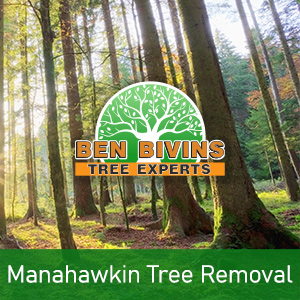
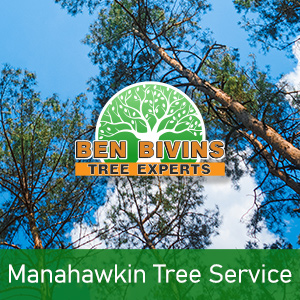

If you are seeking tree service in Manahawkin or tree removal in Manahawkin, Ben Bivins has you covered. Our family-owned business has been providing top notch tree services to the Manahawkin community for years.
Manahawkin Tree Removal – Things to Know

Do you possess a dead or ugly tree that should be removed? Tree removal is a dangerous job that will require the appropriate equipment, machinery and safety standards. Though it could be tempting to eliminate a tree on your own from your residence, it can be a decision that puts yourself in jeopardy, without the correct knowledge. There can be various reasons why you are looking for a tree removal in Manahawkin:- Tree is obstructing too much sun light in your yard
- Tree is deceased or unsafe as well as a potential safety risk
- Tree is overgrown and presents a danger if big limbs fall
- Tree was damaged during a storm and is past the point of salvaging
- You are thinking about renovations which will ultimately damage the trees
- Tree is dropping a great number of limbs, leaves, or pine needles
We are a fully insured and qualified tree company. Don’t assume the associated risk of using an uninsured tree company or depending upon a friend or family member to accomplish this kind of work. Our crew is professionally qualified and our company bears the appropriate qualifications to ensure your Manahawkin tree removal will be conducted in the safest and most efficient possible way. Tree removal necessitates utilization of heavy machinery and dangerous equipment which should only be left to the professionals. Leave it to the specialists! Give us a call today for an estimate for your Manahawkin tree removal.
Manahawkin NJ Tree Service – What We Do

We carry out all aspects of Manahawkin tree service. These services include:- Tree Trimming – Are trees in your yard overgrown? Is your backyard lacking natural light as a result of an overgrown tree? Trimming a tree’s limbs will make a huge difference and could allow you to maintain a tree you otherwise considered removing.
- Pruning – Keep your trees happy and healthy. Pruning involves evaluating a tree’s health and deciding to eliminate branches selectively to optimize its wellness and longevity.
- Crown Reduction – We are able to decrease the scale of your tree’s canopy using this process. Our team will evaluate your trees and make suggestions to remove specific branches which will cut back canopy coverage.
- Emergency Tree Service – Do you have a downed tree that requires urgent attention? Is there a tree that’s close to causing harm if not dealt with promptly? You could be a prospect for emergency tree service.
If you’re a Manahawkin homeowner in need of tree service, Contact Ben Bivins Tree Experts. Scheduling can vary depending on weather, season and our current work load. Our representative will provide you with an estimate and let you know date ranges available for service after assessing your specific needs.
Manahawkin Firewood for Sale
It’s not surprising that a Manahawkin tree removal company might have an excess supply of firewood! If you are in search of firewood for a wood burning stove or fireplace, contact Ben Bivins Tree Experts. Firewood supply availability can vary all year round.